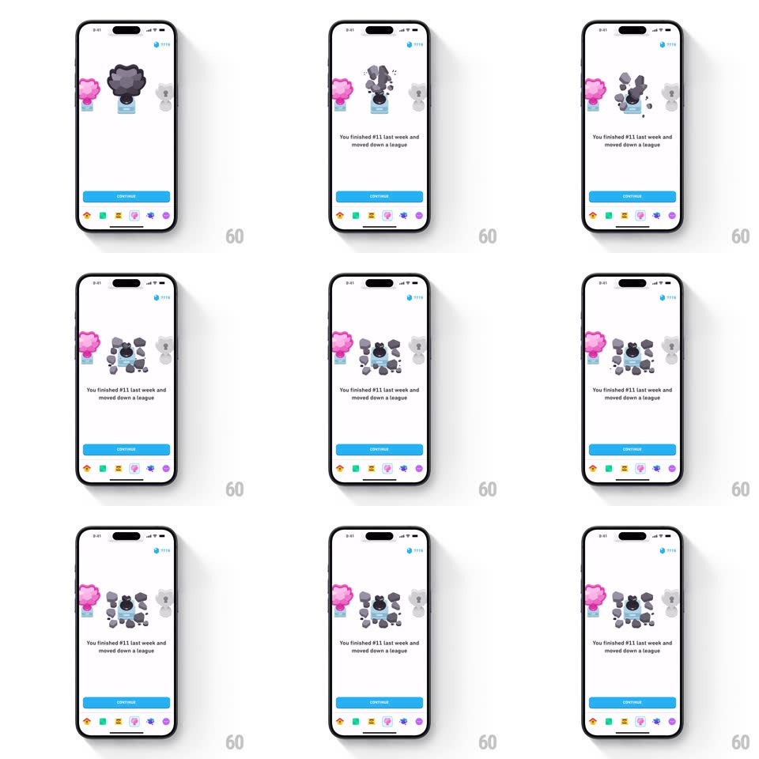

Media
Frame-by-frame

Rebuild this animation 1:1: Duolingo's demotion screen - the center league trophy crumbles into stone fragments that scatter and settle while "You finished #11 last week and moved down a league" fades in.

Rebuild this animation 1:1: Duolingo's demotion screen - the center league trophy crumbles into stone fragments that scatter and settle while "You finished #11 last week and moved down a league" fades in. ## Integration Integration: stack-agnostic spec - springs given as stiffness/damping, timed motions as duration + curve; map every value to your framework and animation library of choice. ## Scene White screen: three pedestals - a pink trophy left and a grey trophy right, both dimmed, with a large dark grey stone trophy at center. Below, the demotion copy and a blue CONTINUE button; league icons line the bottom edge. ## Motion spec Pattern: crumble destruction, ~1.4s. - Tremble: the center trophy shakes in place (+-3px, 300ms) with two small cracks fading in. - Crumble: the trophy breaks into ~10 fragments that burst outward (gravity arcs, 500ms, ease-in) each tumbling (random +-180deg) and landing around the pedestal. - Settle: fragments bounce once (scale-y squash 0.9, 150ms) and rest; a faint dust puff fades (300ms). - Copy: the demotion text fades up 10px (300ms) as the last fragment lands; CONTINUE slides up (300ms, +150ms). ## Calibration - The side trophies never move - the destruction is center-stage only. - Fragments stay on screen after landing; they do not fade away. ## Reduced motion The trophy fades into a pre-broken pile (300ms). ## Don't miss - The break reads as stone - angular chunks, no particles or sparks. - The mood is playful, not violent: small bounce, soft dust, then stillness.